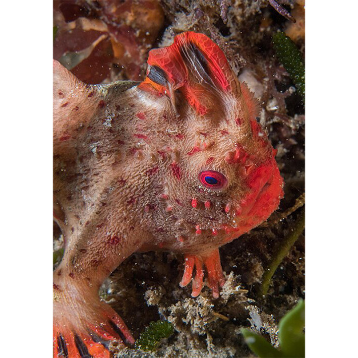
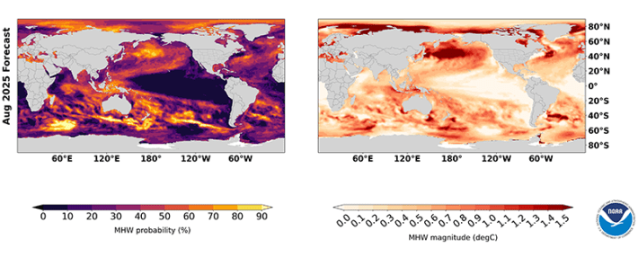

The red handfish is a surly-looking creature native to seas surrounding Tasmania, with a boxer’s face and a ruddy complexion that’s eerily translucent. Over millennia, it has evolved creative uses for its fins. Two of them sprout from its underside and operate as tiny hands that crawl the seafloor—giving this thumb-sized critter its name—and a third erupts from its brow in a florid mohawk. The red handfish is also critically endangered, their numbers only in the dozens.
It is a darling of locals in Tasmania. But in December 2023, an ominous marine heatwave loomed and was predicted to center directly over the two reefs where the red handfish live. So scientists lobbied to rescue some of the animals. Otherwise, they estimated, 75 to 99 percent of the population would likely perish. Twenty-five of the fish were scooped off their home reef in the Frederik Henry Bay in southeast Tasmania and held in tanks on land for four months.
After the heatwave abated, 18 of the fish were released back into the wild (four were kept in captivity for safekeeping and for genetic research on the species, and three fish had died). Scientists suggest that without the temporary rescue of a portion of the population, the entire species may have gone extinct in the heatwave. “There was nowhere for the red handfish to move to get away from these warm temperatures,” says Alistair Hobday, research director of the Sustainable Marine Futures Program at the Commonwealth Scientific and Industrial Research Organisation in Tasmania. Today there are roughly 100 red handfish in the wild and more than 200 individuals that have now been bred in captivity.
Land-based heatwaves often last a few days—but some marine heatwaves can simmer for months.
Predicting such potentially devastating marine heatwaves is a new science. Researchers are developing the approach as a way to address some of the near-term effects of climate change. To forecast these dangerous spikes in water temperatures, researchers use models of ocean currents and draw on improved observational data collection, both at sea and by satellite. The goal is to empower conservation managers, commercial fisheries, and marine recreation business operators to become more responsive, seizing opportunities or curtailing activity ahead of extreme weather events.
What constitutes a heatwave at sea is similar to what we experience on land—a period of extreme warming that is abnormal for a given location. At sea, a series of connected events gives rise to a heatwave, which usually begins with weakened winds and atmospheric high-pressure systems that prevent the upper layers of the ocean from mixing with cooler waters below, leading to surface water warming. Hot water then gradually pools in a region, driven there by ocean currents. Marine heatwaves frequently occur where currents butt up against continental shelves, which also happen to be biodiversity hotspots.
But there are important differences between marine and atmospheric heatwaves. Because water holds heat for longer, a marine heatwave has a tendency to persist. “The ocean has more memory, and so if you push on one bit of the ocean, the effect downstream is still visible three months later,” Hobday says. Compared to land-based heatwaves, which are often measured by a few to several days, some marine heatwaves can simmer for months.

HOT HANDS:Scientists may have saved the red handfish from extinction by removing some of them from their ocean home before a 2023 heatwave hit Tasmanian waters. Credit: Rick Stuart-Smith/ Wikimedia Commons.
One of the most damaging marine heatwaves on record occurred along the West Coast of North America at the turn of 2014. It disrupted marine food chains and businesses alike and was dubbed “The Blob” by meteorologists for the enormous warm pool of surface water that aggregated just off shore. The Blob lingered for two years.
In early May 2025, more than one fifth of the ocean was experiencing a heatwave. Directly off the southern tip of South Africa, for example, surface water temperatures were so high that the heatwave has been designated “extreme,” or level IV, the maximum on a four-point scale. It had been raging for more than 40 days, with temperatures more than 44 degrees Fahrenheit above average. A level III heatwave (“severe”) was unfolding off the west coast of Norway, while a level I heatwave (“moderate”) spilled across the Gulf of Mexico with the warmest pockets along the coastline of Louisiana.
Because of their more gradual dynamics in how they build—with smoldering confluences of wind, current, and air temperature—marine heat waves should be, in theory, easier to forecast than similar occurrences in the atmosphere. But it is only recently that such forecasting tools have been born. The models rely on real-time data collected by satellites and weather buoys deployed at sea, and the coverage from these sensors has significantly increased in the past decade.
Like real-time atmospheric models, these marine forecasts require vast computational power, which is expensive to operate.
But many scientists argue that these costs are easy to justify. “Without a forecast, you’re just waiting for the thing to hit you,” Hobday says. “But a forecast lets you be proactive.”
Predicting such potentially devastating marine heatwaves is a new science.
During the years of The Blob (which officially lasted from December 2013 to August 2016), no forecasting tools were available to fisheries and conservation managers, and a cascade of baleful effects reverberated through the marine ecosystem striking commercial fisheries and wildlife alike. By pressing warm waters right up against the coast and smothering the cool, nutrient rich waters beneath them, The Blob created a temporary famine for coastal food webs. Sardine fisheries collapsed, and a devastating number of humpback whales, who shifted their migration route to search for food, became entangled in crab fishing gear on their shallow water detours. According to the United States National Oceanic and Atmospheric Administration (NOAA), in Southern California five times the average number of sea lion pups were left stranded in 2015, as their parents swam farther and longer in search of scarcer prey. “Their food had disappeared or moved away and then that leads to starvation,” says Pip Moore, a professor of marine sciences at Newcastle University in the United Kingdom.
Partly in response to the devastating effects of The Blob, in 2022 NOAA developed a marine heatwave forecast, which is publicly available through its Physical Sciences Laboratory. The forecasts—which like many of NOAA’s activities are at risk of being halted due to U.S. federal funding cuts—cover all the oceans of the world at a resolution of single degrees of latitude and longitude. It can help inform conservation managers, commercial fisheries, and marine recreation businesses. Based on its predictions, the agency has, over the past five years, published annual reports for fisheries and conservation scientists, showing the extent of heat waves in U.S. waters and offering forecasts for the coming year.
In Australia, a marine heatwave forecast with an even higher resolution than NOAA’s is published and updated regularly. Australia is even further ahead in marine heatwave forecasting largely because political will supports it, Hobday says. The country’s Bureau of Meteorology offers a tracker that can forecast a week ahead. But a more powerful model, with projections of ocean temperatures as far as six months down the road, is expected to come online later this year. It was the experimental version of this tracker that kickstarted the rescue operation for the Tasmanian red handfish.

GETTING HOT IN HERE:Forecasting and monitoring marine heatwaves may prove crucial to efforts aimed at protecting sensitive species and ecosystems. Credit: NOAA Physical Sciences Laboratory.
“So, Australia was well prepared for understanding it’s already got rapid warming, and now we’re getting these extreme events on top of it,” Hobday says. And more people are realizing that this sort of investment can end up saving other species—some of which are hugely valuable to commercial fisheries.
But forecasting the onset of marine heatwaves is not universally popular. Although it can help predict some helpful movement of lucrative fisheries, forecasting can also sometimes disrupt their operations. For example, when heatwaves are forecast to rear their heads, some protected species might move into typical fishing territory. This can happen with loggerhead sea turtles along the coast of Southern California, explains Michael Jacox, a research oceanographer with NOAA who spearheaded the development of the agency’s heatwave forecasting tool. If there’s a good chance these endangered turtles migrate into an active fishery, that area might get preemptively closed to fishing temporarily.
And while the red handfish case was a straightforward call to action, the impact of marine heatwaves on ecology is not always clear. Researchers are still working to parse how much observed impacts on sea life result from the general creeping increase in average seawater temperatures and how much are from acute heatwave shocks.
For example, Pip Moore and collaborators found that heatwaves played a surprisingly big role in sparking geographical shifts in kelp and seagrass communities around rocky shores in the U.K. in 2001. “We thought that the species were moving as a function of gradual anthropogenic climate change,” she says. But when Moore and her colleagues considered biogeographic data on those communities through the lens of marine heatwaves that assumption faltered. “It’s become increasingly apparent that instead, marine heatwaves are responsible for jumps in species distribution,” she adds. These types of rapid changes can have serious impacts on coastal industries, from fishing to tourism, and “can cost millions of U.S. dollars in terms of impact,” Moore says.
And of course there are the red handfish. Who might have gone extinct, but for the new ability to forecast the arrival of these potentially species-killing marine temperature spikes. Moore and Hobday believe the tools they are building can protect other species from acute, heatwave-related calamity now—and can serve as training exercises for the more-widespread and slower moving disruptions being wrought by climate change.
“It’s a stress test for the future” Hobday says. “How well you cope with [a marine heatwave] will tell you how well you might cope with the long-term future. And practicing that decision making will make us better and better at coping with climate change.”
Because increasingly frequent heat events and rising ocean temperatures show no signs of abating. “If we can take away the element of surprise through forecasting,” Hobday says, “people can be better prepared, they can practice for the future.” 
Lead image: 145Patma / Shutterstock
Källförteckning
- Originalartikel: https://nautil.us/our-boiling-seas-1215199/